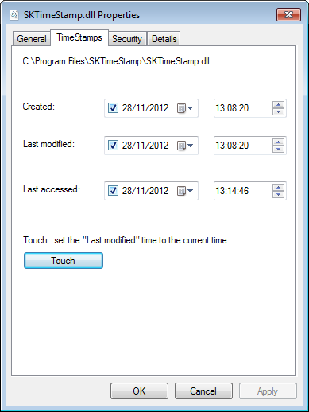
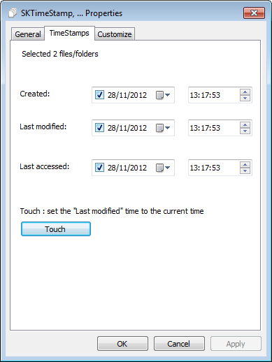
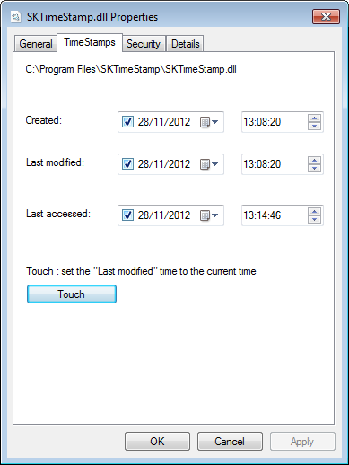
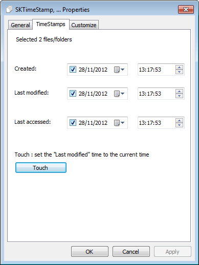

SKTimeStamp
SKTimeStamp is a very simple shell extension which adds a new page to the Explorer properties dialog. On that new page, you can change the file/folder date and time.
Go to the download page.
 
SKTimeStamp is a very simple shell extension which adds a new page to the Explorer properties dialog. On that new page, you can change the file/folder date and time.
Go to the download page.
 